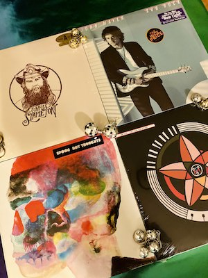
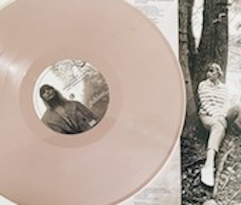
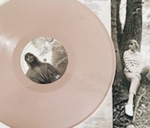

My Vinyl Roundup!
My records on repeat all week long:
Anything from brand new finds to all time classics!


This weeks spolight is one of my favorite albums of all times, Fleetwood Mac's infamous Rumours.
About the Author
 

I started my journey with records almost five years ago, and I can’t imagine stopping. It has been a hobby that takes my mind off of things, and gives me an outlet to express my interests. I have loved music since I was a little kid, and collecting records has become a new way for me to explore my love for music in a new and exciting way. I was first introduced to records from my parents, who have collected them since they were young, and kept them for all these years. I discovered them in our basement years ago, and the rest is history. Sifting through all their records, I saw some I recognized, and some I had never seen or heard in my life before, but I couldn’t wait to hear them. From there I got to work, researching what record players, where I could get them, but most importantly, how fast it would get here. After picking out a few of my parents records, I got to work looking for records from artists I knew and currently loved. And after all this time, I will never have enough records. And with each new record, my collection grows. While it is small in number, it is definitely mighty. My record collection is my pride and joy. Finding old classics is a steal for me, while discovering new artists that have their albums on vinyl lets me listen to them in a fun and new way. It is never a dull moment when collecting vinyl, and each new record shop I stumble upon makes me feel like a kid in candy shop, and I wouldn’t have it any other way. My journey collecting records is nowhere near over, and I’m so excited to see where it takes me in the future. This is my favorite hobby, and I’m so excited to let you to get to learn more about what it means to me!